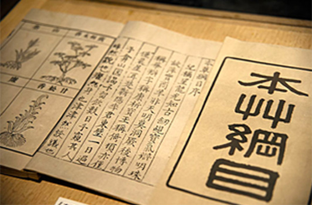

地龙蛋白
诚信 . 专业 . 品质 . 领先
联系我们

-
电话：022-25352442
传真：022-25352442
联系人：白经理 13902139368
地址：天津市滨海新区塘
- 
-
本草纲目
地龙
一、地龙的介绍 ：
地龙是我国重要的中药材之一。最早的中药学专著《神农本草经》中收载的6 7种动物药中就有蚯蚓。李时珍在《本草纲目》称之为具有通经活络、活血化瘀、预防治疗心脑血管疾病作用，在《本草纲目》虫部中有40多种药用作用。地龙除 了具有较高营养价值外，它还有很多保健功能，能增强人体的抗病力，提高人们的健康水平。地龙具有多方面的药理作用，涉及人体各个系统如心血管系统、血液系 统、免疫系统、中枢神经系统、呼吸系统、消化系统等等。尤其在心血管系统和血液系统方面，地龙能很好地预防高血压、心肌梗塞、心律失常、中风栓塞等。
二、地龙的“断后重生”：
当蚯蚓被切成两段时，在温度，PH和杀菌等适宜的条件下，它断面上的肌肉组织立即收缩，一部分肌肉便迅速自己溶解，形成新的细胞 团，同时白血球聚集在切面上，形成栓塞，使伤口迅速闭合。位于体腔中隔里的原生细胞迅速迁移到切面上来与自己溶解的肌肉细胞一起，在切面上形成结节状的再 生芽。与此同时体内的消化道、神经系统、血管等组织的细胞，通过大量的有丝分裂，迅速地向再生芽里生长。就这样，随着细胞的不断增生，缺少头的一段的切面 上，会长出一个新的头来；缺少尾巴那一段的切面上，会长出一条尾巴来。这样一条蚯蚓就变成了两条完整的蚯蚓。
三、地龙的营养价值：
据测定，蚯蚓的 蛋白质含量约占干重的53.5%~65.1%，脂肪含量约为4.4%~17.38%，碳水化合物约为11%~17.4%，水分7.8%~23%。蚯蚓体内 还含有丰富的维生素D（约占鲜体重的0.04%~0.073%），以及钙和磷（约占鲜体重的0.124%~0.188%）等矿物质元素。蚯蚓体内含有地龙 素、地龙解毒素、黄嘌呤、抗组织胺和维生素B等多种药用成分。同时，蚯蚓也是某些寄生虫如线虫和绦虫的中间宿主，如环细线虫和长刺后圆线虫等。
四、 地龙的主治功效:
中药称地龙，地龙性寒味咸。其味咸，性寒。功能为清热、镇痉、止喘、利尿。主治高热狂躁、惊风抽搐、头痛目赤、喘息痰热、中风、半身不遂等 病证。中医治疗前列腺等湿热下注泌尿感染等病中的常用中药，该方是民间古方。地龙提供取液有良好的定咳平喘的作用。蚯蚓灰与玫瑰油混合能治秃发。
五、地龙的研发
现代人最早关注地龙起于二战后的日本，作为原子弹爆炸区域内幸存的少数物种之一，日本科 学家就着手进行了研究，鉴于当时的技术条件，并未取得突破性的进展，到了1983年，日本科学家美原恒教授带领其科研团队，开始了地龙蛋白提取技术的攻 关。这期间，美国的杰弗里教授、德国的卡特尔教授，都相继证实了
地龙蛋白
“地龙蛋白”早在2009年被国家卫生部认定为“新资源食品”（见中华人民共和国卫生部2009年第18号公告）。以下所用中药材都在国家卫生部公布的【既是食品又是药品的物品名单】、【可用于保健食品的物品名单】之内的食药材。因此，本产品作为新资源食品即可有病治病，无病可起到保健预防预的作用。
地龙蛋白，运用现代生物工程技术，采用超临界低温萃取技术，从(赤子爱胜)蚯蚓中提取的高纯度蛋白（再生复合酶）。
地龙含有胶原酶、纤溶酶、蚓激酶、核酸、微量元素等多种成分。地龙提取物（包括蚓激酶等）对体内的凝血系统和纤溶系统具有广泛的影响，既可明显降低血小板黏附率，延长体内血栓形成和溶解体内血栓，又能增加脑血流量，减少脑血管阻力。地龙提取物还能提高红细胞变形能力，从而改善血液流变性和微循环障碍。世界各国的医学专家想方设法，使用溶栓、抗凝、扩张血管、活血化瘀等手段来疏通大血管，却无法从根本上解决问题。1996年8月16日，在连续观察数月后，美原恒教授发现地龙蛋白能在大脑损伤区域再生微血管、神经细胞。这一发现，奠定了美原恒教授在世界医学界的地位，成为世界脑血管病医学研究的领军人物。在整个实验中，地龙蛋白就像细胞复制剂一样，让仅存的微血管和神经细胞不断复制，继而形成组织，产生正常的组织功能。这一发现立即引起了全球医学界的极大关注：脑内微血管损伤及坏死，是造成脑血管病难以治愈的根本原因，地龙蛋白成功的应用，使脑血管疾病的治疗难题迎刃而解。